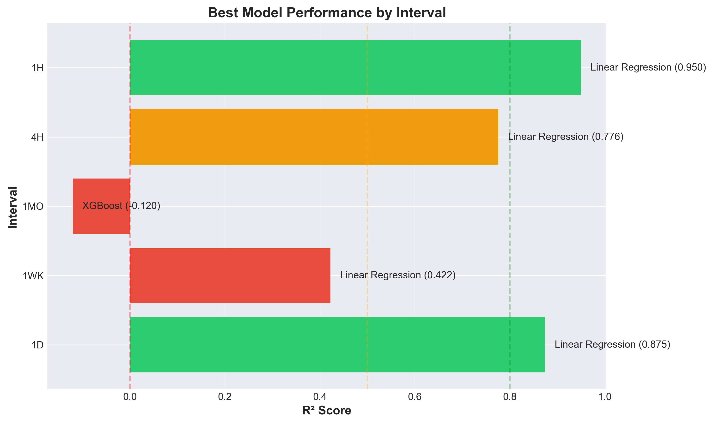
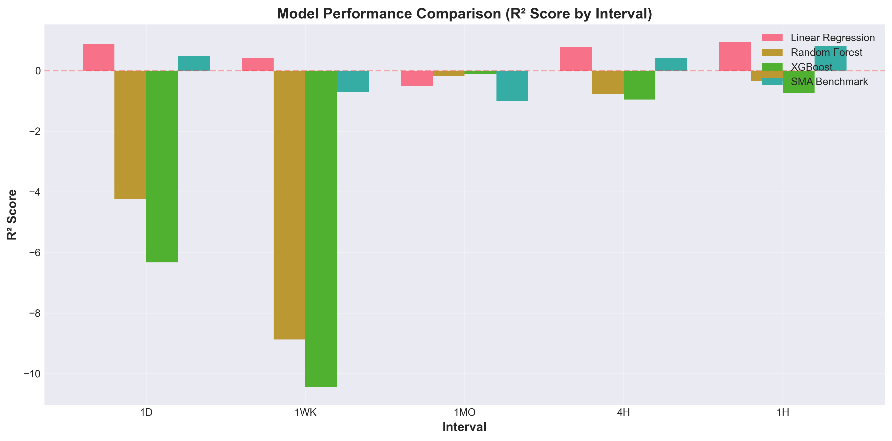
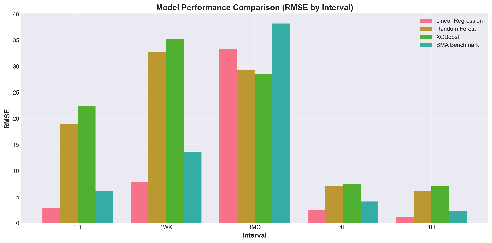
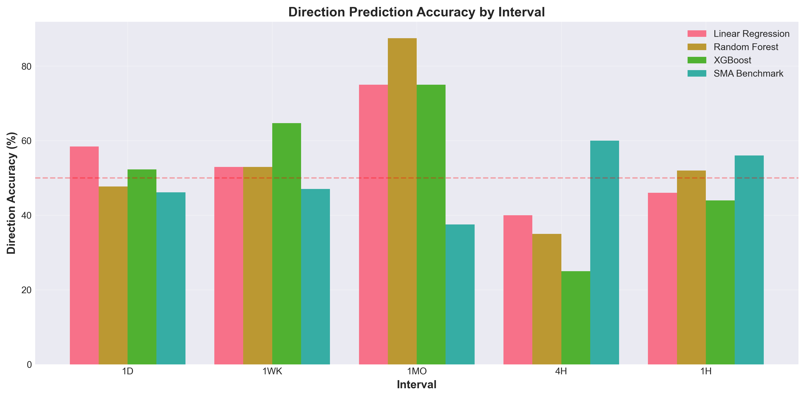
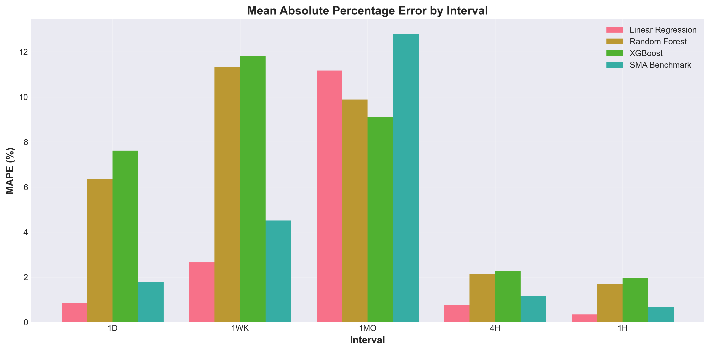
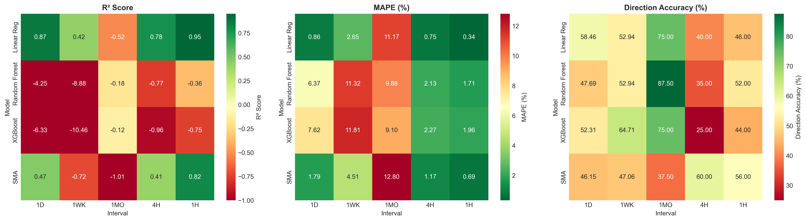

🎯 Executive Summary
Best R² Score
94.9%
1h Interval - Linear Regression
Best Direction Accuracy
87.5%
1mo Interval - Random Forest
Lowest MAPE
0.35%
1h Interval - Linear Regression
Models Tested
4
Per Interval
🏆 Key Finding: Linear Regression consistently outperforms complex models (Random Forest, XGBoost) across all intervals.
Shorter intervals (1h, 1d) show significantly better predictive accuracy than longer intervals.
📈 Performance Visualizations
Best Model by Interval

R² Score Comparison

RMSE Comparison

Direction Accuracy

MAPE Comparison

Metrics Heatmap

📊 Detailed Results
1D Interval
| Model | RMSE | MAE | R² | MAPE (%) | Direction Acc (%) |
|---|---|---|---|---|---|
| Linear Regression | 2.9364 | 2.3083 | 0.8746 | 0.86 | 58.46 |
| SMA Benchmark | 6.0566 | 4.7864 | 0.4664 | 1.79 | 46.15 |
| Random Forest | 18.9908 | 17.3625 | -4.2461 | 6.37 | 47.69 |
| XGBoost | 22.4552 | 20.7587 | -6.3347 | 7.62 | 52.31 |
1WK Interval
| Model | RMSE | MAE | R² | MAPE (%) | Direction Acc (%) |
|---|---|---|---|---|---|
| Linear Regression | 7.9214 | 7.0300 | 0.4223 | 2.65 | 52.94 |
| SMA Benchmark | 13.6775 | 11.9032 | -0.7222 | 4.51 | 47.06 |
| Random Forest | 32.7572 | 30.4430 | -8.8785 | 11.32 | 52.94 |
| XGBoost | 35.2819 | 31.7676 | -10.4599 | 11.81 | 64.71 |
1MO Interval
| Model | RMSE | MAE | R² | MAPE (%) | Direction Acc (%) |
|---|---|---|---|---|---|
| XGBoost | 28.5312 | 23.7375 | -0.1203 | 9.10 | 75.00 |
| Random Forest | 29.2863 | 25.4380 | -0.1804 | 9.88 | 87.50 |
| Linear Regression | 33.2806 | 28.0053 | -0.5244 | 11.17 | 75.00 |
| SMA Benchmark | 38.1957 | 32.5183 | -1.0079 | 12.80 | 37.50 |
4H Interval
| Model | RMSE | MAE | R² | MAPE (%) | Direction Acc (%) |
|---|---|---|---|---|---|
| Linear Regression | 2.5395 | 1.8985 | 0.7760 | 0.75 | 40.00 |
| SMA Benchmark | 4.1275 | 2.9407 | 0.4084 | 1.17 | 60.00 |
| Random Forest | 7.1417 | 5.3185 | -0.7713 | 2.13 | 35.00 |
| XGBoost | 7.5108 | 5.6698 | -0.9591 | 2.27 | 25.00 |
1H Interval
| Model | RMSE | MAE | R² | MAPE (%) | Direction Acc (%) |
|---|---|---|---|---|---|
| Linear Regression | 1.1834 | 0.8595 | 0.9500 | 0.34 | 46.00 |
| SMA Benchmark | 2.2658 | 1.7395 | 0.8169 | 0.69 | 56.00 |
| Random Forest | 6.1679 | 4.2655 | -0.3572 | 1.71 | 52.00 |
| XGBoost | 7.0118 | 4.8837 | -0.7539 | 1.96 | 44.00 |
💡 Recommendations
For Trading:
- Intraday (1h): Use Linear Regression - 94.9% R² (High Confidence)
- Daily (1d): Use Linear Regression - 87.4% R² (High Confidence)
- Swing (4h): Use Linear Regression - 76.0% R² (Moderate Confidence)
- Long-term (1wk, 1mo): Use for direction only (Low Confidence)